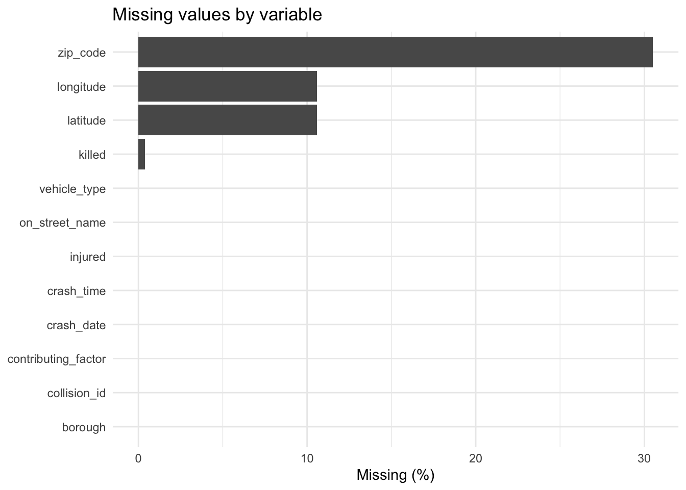
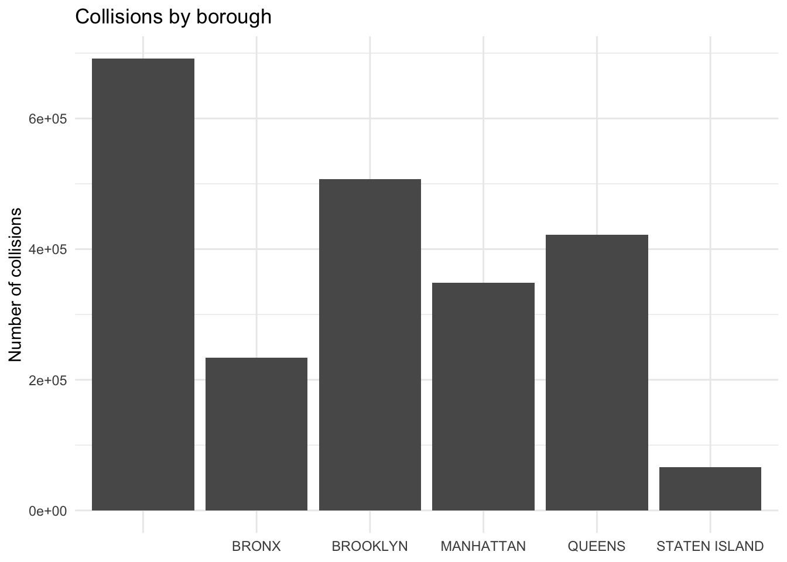
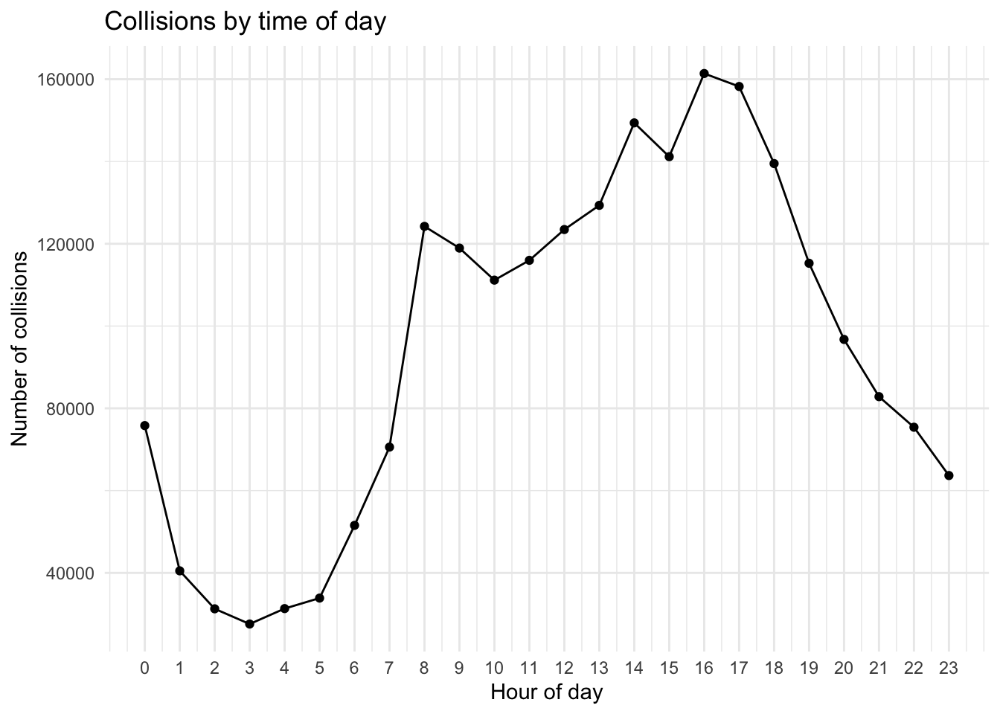

library(tidyverse)
library(dplyr)
library(lubridate) Exploratory Data Analysis
Class date: Sep 16, 2026
Getting started
Before We Get Started
Main idea
Do not start by making a graph. Start by asking whether the data are trustworthy and whether each variable means what you think it means.
A useful workflow is:
Question → Audit → Clean → Explore → Reshape → Visualize → Communicate
Understanding the data
Understand what one row means
Before calculating statistics or drawing plots, identify the unit of observation.
Ask:
- What does one row represent?
- What does one column represent?
- Which columns are identifiers or metadata?
- Which variables are outcomes, predictors, or descriptive attributes?
- Is the dataset already aggregated, or does each row represent an individual event/person/case?
This matters because the same variable can mean different things at different levels of analysis.
For example:
- one row = one person;
- one row = one survey response;
- one row = one social-media post;
- one row = one traffic collision;
- one row = one country-year.
Variable types
Numeric variables
Numeric variables have values that describe a measurable quantity: how many or how much.
- Continuous numeric variable: observations can take values on a continuous scale, such as temperature, income, or distance.
- Discrete numeric variable: observations represent counts, such as number of clicks, number of injuries, or number of purchases.
Categorical variables
Categorical variables describe a characteristic or group membership: what type or which category.
- Nominal variable: categories have no meaningful ordering, such as borough or vehicle type.
- Ordinal variable: categories can be logically ordered, such as satisfaction level or education level.
TipNumbers are not always numeric variables
A variable can be stored as numbers but still be categorical.
For example, if 1 = Seoul, 2 = Busan, and 3 = Incheon, the numbers are codes, not quantities. Computing their mean would not be meaningful.
What is exploratory data analysis (EDA)?
EDA is the process of learning what a dataset contains before making strong conclusions from it.
EDA usually combines:
- Descriptive statistics — numerical summaries of distributions and relationships.
- Graphical summaries — visual displays that reveal patterns that a few summary statistics may hide.
- Data-quality checks — checks for missing, duplicated, invalid, inconsistent, or unusual values.
EDA and preprocessing are therefore closely connected. We often discover cleaning problems while exploring the data.
A practical data-audit checklist
Before analysis, ask the following questions.
- Rows: How many observations are there?
- Columns: How many variables are there?
- Variable roles: Which columns are identifiers, attributes, outcomes, or metadata?
- Data types: Which variables are numeric, categorical, text, dates, or times?
- Ranges: Are minimum and maximum values plausible?
- Categories: Are category labels consistent and documented?
- Missing values: Where are data missing, and how much is missing?
- Duplicates: Are rows or identifiers unexpectedly duplicated?
- Invalid values: Are there impossible or undefined codes?
- Outliers: Are extreme values errors, or are they valid but rare cases?
TipA useful principle
A preprocessing decision should always answer two questions:
- What is wrong or inconvenient about the current value?
- Why is the chosen correction appropriate for the analysis?
Never delete or replace observations only because a function makes it easy to do so.
Case study: NYC Motor Vehicle Collisions
For the preprocessing exercise, we will use an English-language public dataset from NYC Open Data.
Dataset: Motor Vehicle Collisions – Crashes
Provider: New York City Police Department (NYPD)
Dataset page: https://data.cityofnewyork.us/d/h9gi-nx95
Each row represents one motor vehicle collision.
Load packages
Load the data
collisions_raw <- read.csv("/Users/hyehyunma/Documents/courses-in-hyu/data/Motor_Vehicle_Collisions_-_Crashes_20260914.csv", header=T)First look
dim(collisions_raw)[1] 2269187 29names(collisions_raw) [1] "CRASH.DATE" "CRASH.TIME"
[3] "BOROUGH" "ZIP.CODE"
[5] "LATITUDE" "LONGITUDE"
[7] "LOCATION" "ON.STREET.NAME"
[9] "CROSS.STREET.NAME" "OFF.STREET.NAME"
[11] "NUMBER.OF.PERSONS.INJURED" "NUMBER.OF.PERSONS.KILLED"
[13] "NUMBER.OF.PEDESTRIANS.INJURED" "NUMBER.OF.PEDESTRIANS.KILLED"
[15] "NUMBER.OF.CYCLIST.INJURED" "NUMBER.OF.CYCLIST.KILLED"
[17] "NUMBER.OF.MOTORIST.INJURED" "NUMBER.OF.MOTORIST.KILLED"
[19] "CONTRIBUTING.FACTOR.VEHICLE.1" "CONTRIBUTING.FACTOR.VEHICLE.2"
[21] "CONTRIBUTING.FACTOR.VEHICLE.3" "CONTRIBUTING.FACTOR.VEHICLE.4"
[23] "CONTRIBUTING.FACTOR.VEHICLE.5" "COLLISION_ID"
[25] "VEHICLE.TYPE.CODE.1" "VEHICLE.TYPE.CODE.2"
[27] "VEHICLE.TYPE.CODE.3" "VEHICLE.TYPE.CODE.4"
[29] "VEHICLE.TYPE.CODE.5" glimpse(collisions_raw)Rows: 2,269,187
Columns: 29
$ CRASH.DATE <chr> "09/11/2021", "03/26/2022", "11/01/2023"…
$ CRASH.TIME <chr> "2:39", "11:45", "1:29", "6:55", "13:21"…
$ BOROUGH <chr> "", "", "BROOKLYN", "", "", "", "", "", …
$ ZIP.CODE <int> NA, NA, 11230, NA, NA, NA, NA, NA, NA, 1…
$ LATITUDE <dbl> NA, NA, 40.62179, NA, NA, NA, NA, NA, NA…
$ LONGITUDE <dbl> NA, NA, -73.97002, NA, NA, NA, NA, NA, N…
$ LOCATION <chr> "", "", " (40.62179, -73.970024)", ""…
$ ON.STREET.NAME <chr> "WHITESTONE EXPRESSWAY", "QUEENSBORO BRI…
$ CROSS.STREET.NAME <chr> "20 AVENUE", "", "AVENUE K", "", "", "",…
$ OFF.STREET.NAME <chr> "", "", "", "", "", "", "", "", "61 …
$ NUMBER.OF.PERSONS.INJURED <int> 2, 1, 1, 0, 0, 0, 0, 0, 0, 0, 0, 0, 0, 2…
$ NUMBER.OF.PERSONS.KILLED <int> 0, 0, 0, 0, 0, 0, 0, 0, 0, 0, 0, 0, 0, 0…
$ NUMBER.OF.PEDESTRIANS.INJURED <int> 0, 0, 0, 0, 0, 0, 0, 0, 0, 0, 0, 0, 0, 0…
$ NUMBER.OF.PEDESTRIANS.KILLED <int> 0, 0, 0, 0, 0, 0, 0, 0, 0, 0, 0, 0, 0, 0…
$ NUMBER.OF.CYCLIST.INJURED <int> 0, 0, 0, 0, 0, 0, 0, 0, 0, 0, 0, 0, 0, 0…
$ NUMBER.OF.CYCLIST.KILLED <int> 0, 0, 0, 0, 0, 0, 0, 0, 0, 0, 0, 0, 0, 0…
$ NUMBER.OF.MOTORIST.INJURED <int> 2, 1, 1, 0, 0, 0, 0, 0, 0, 0, 0, 0, 0, 2…
$ NUMBER.OF.MOTORIST.KILLED <int> 0, 0, 0, 0, 0, 0, 0, 0, 0, 0, 0, 0, 0, 0…
$ CONTRIBUTING.FACTOR.VEHICLE.1 <chr> "Aggressive Driving/Road Rage", "Pavemen…
$ CONTRIBUTING.FACTOR.VEHICLE.2 <chr> "Unspecified", "", "Unspecified", "Unspe…
$ CONTRIBUTING.FACTOR.VEHICLE.3 <chr> "", "", "Unspecified", "", "", "", "", "…
$ CONTRIBUTING.FACTOR.VEHICLE.4 <chr> "", "", "", "", "", "", "", "", "", "", …
$ CONTRIBUTING.FACTOR.VEHICLE.5 <chr> "", "", "", "", "", "", "", "", "", "", …
$ COLLISION_ID <int> 4455765, 4513547, 4675373, 4541903, 4566…
$ VEHICLE.TYPE.CODE.1 <chr> "Sedan", "Sedan", "Moped", "Sedan", "Sta…
$ VEHICLE.TYPE.CODE.2 <chr> "Sedan", "", "Sedan", "Pick-up Truck", "…
$ VEHICLE.TYPE.CODE.3 <chr> "", "", "Sedan", "", "", "", "", "", "",…
$ VEHICLE.TYPE.CODE.4 <chr> "", "", "", "", "", "", "", "", "", "", …
$ VEHICLE.TYPE.CODE.5 <chr> "", "", "", "", "", "", "", "", "", "", …head(collisions_raw) CRASH.DATE CRASH.TIME BOROUGH ZIP.CODE LATITUDE LONGITUDE
1 09/11/2021 2:39 NA NA NA
2 03/26/2022 11:45 NA NA NA
3 11/01/2023 1:29 BROOKLYN 11230 40.62179 -73.97002
4 06/29/2022 6:55 NA NA NA
5 09/21/2022 13:21 NA NA NA
6 04/26/2023 13:30 NA NA NA
LOCATION ON.STREET.NAME CROSS.STREET.NAME
1 WHITESTONE EXPRESSWAY 20 AVENUE
2 QUEENSBORO BRIDGE UPPER
3 (40.62179, -73.970024) OCEAN PARKWAY AVENUE K
4 THROGS NECK BRIDGE
5 BROOKLYN BRIDGE
6 WEST 54 STREET
OFF.STREET.NAME NUMBER.OF.PERSONS.INJURED NUMBER.OF.PERSONS.KILLED
1 2 0
2 1 0
3 1 0
4 0 0
5 0 0
6 0 0
NUMBER.OF.PEDESTRIANS.INJURED NUMBER.OF.PEDESTRIANS.KILLED
1 0 0
2 0 0
3 0 0
4 0 0
5 0 0
6 0 0
NUMBER.OF.CYCLIST.INJURED NUMBER.OF.CYCLIST.KILLED NUMBER.OF.MOTORIST.INJURED
1 0 0 2
2 0 0 1
3 0 0 1
4 0 0 0
5 0 0 0
6 0 0 0
NUMBER.OF.MOTORIST.KILLED CONTRIBUTING.FACTOR.VEHICLE.1
1 0 Aggressive Driving/Road Rage
2 0 Pavement Slippery
3 0 Unspecified
4 0 Following Too Closely
5 0 Passing Too Closely
6 0 Unspecified
CONTRIBUTING.FACTOR.VEHICLE.2 CONTRIBUTING.FACTOR.VEHICLE.3
1 Unspecified
2
3 Unspecified Unspecified
4 Unspecified
5 Unspecified
6 Unspecified
CONTRIBUTING.FACTOR.VEHICLE.4 CONTRIBUTING.FACTOR.VEHICLE.5 COLLISION_ID
1 4455765
2 4513547
3 4675373
4 4541903
5 4566131
6 4623759
VEHICLE.TYPE.CODE.1 VEHICLE.TYPE.CODE.2 VEHICLE.TYPE.CODE.3
1 Sedan Sedan
2 Sedan
3 Moped Sedan Sedan
4 Sedan Pick-up Truck
5 Station Wagon/Sport Utility Vehicle
6 Sedan Box Truck
VEHICLE.TYPE.CODE.4 VEHICLE.TYPE.CODE.5
1
2
3
4
5
6 Do not immediately scroll through thousands of rows. Start with structure.
library(janitor)
collisions_raw %>%
clean_names() %>%
select(
collision_id, crash_date, crash_time, borough, zip_code,
latitude, longitude, on_street_name,
number_of_persons_injured, number_of_persons_killed,
contributing_factor_vehicle_1, vehicle_type_code_1
) %>%
glimpse()Rows: 2,269,187
Columns: 12
$ collision_id <int> 4455765, 4513547, 4675373, 4541903, 4566…
$ crash_date <chr> "09/11/2021", "03/26/2022", "11/01/2023"…
$ crash_time <chr> "2:39", "11:45", "1:29", "6:55", "13:21"…
$ borough <chr> "", "", "BROOKLYN", "", "", "", "", "", …
$ zip_code <int> NA, NA, 11230, NA, NA, NA, NA, NA, NA, 1…
$ latitude <dbl> NA, NA, 40.62179, NA, NA, NA, NA, NA, NA…
$ longitude <dbl> NA, NA, -73.97002, NA, NA, NA, NA, NA, N…
$ on_street_name <chr> "WHITESTONE EXPRESSWAY", "QUEENSBORO BRI…
$ number_of_persons_injured <int> 2, 1, 1, 0, 0, 0, 0, 0, 0, 0, 0, 0, 0, 2…
$ number_of_persons_killed <int> 0, 0, 0, 0, 0, 0, 0, 0, 0, 0, 0, 0, 0, 0…
$ contributing_factor_vehicle_1 <chr> "Aggressive Driving/Road Rage", "Pavemen…
$ vehicle_type_code_1 <chr> "Sedan", "Sedan", "Moped", "Sedan", "Sta…Keep variables we need for class
A large dataset often contains columns that are not relevant to the current question. Selecting a smaller working dataset makes later steps easier to understand.
collisions <- collisions_raw %>%
clean_names() %>%
select(
collision_id,
crash_date,
crash_time,
borough,
zip_code,
latitude,
longitude,
on_street_name,
number_of_persons_injured,
number_of_persons_killed,
contributing_factor_vehicle_1,
vehicle_type_code_1
) %>%
rename(
injured = number_of_persons_injured,
killed = number_of_persons_killed,
contributing_factor = contributing_factor_vehicle_1,
vehicle_type = vehicle_type_code_1
)
glimpse(collisions)Rows: 2,269,187
Columns: 12
$ collision_id <int> 4455765, 4513547, 4675373, 4541903, 4566131, 46237…
$ crash_date <chr> "09/11/2021", "03/26/2022", "11/01/2023", "06/29/2…
$ crash_time <chr> "2:39", "11:45", "1:29", "6:55", "13:21", "13:30",…
$ borough <chr> "", "", "BROOKLYN", "", "", "", "", "", "", "BROOK…
$ zip_code <int> NA, NA, 11230, NA, NA, NA, NA, NA, NA, 11208, 1123…
$ latitude <dbl> NA, NA, 40.62179, NA, NA, NA, NA, NA, NA, 40.66720…
$ longitude <dbl> NA, NA, -73.97002, NA, NA, NA, NA, NA, NA, -73.866…
$ on_street_name <chr> "WHITESTONE EXPRESSWAY", "QUEENSBORO BRIDGE UPPER"…
$ injured <int> 2, 1, 1, 0, 0, 0, 0, 0, 0, 0, 0, 0, 0, 2, 0, 0, 0,…
$ killed <int> 0, 0, 0, 0, 0, 0, 0, 0, 0, 0, 0, 0, 0, 0, 0, 0, 0,…
$ contributing_factor <chr> "Aggressive Driving/Road Rage", "Pavement Slippery…
$ vehicle_type <chr> "Sedan", "Sedan", "Moped", "Sedan", "Station Wagon…Audit data quality
Check dimensions, names, and data types
Basic questions:
- How many rows do we have?
- How many columns?
- Are variable names understandable?
- Did R read each variable using the expected data type?
nrow(collisions)[1] 2269187ncol(collisions)[1] 12names(collisions) [1] "collision_id" "crash_date" "crash_time"
[4] "borough" "zip_code" "latitude"
[7] "longitude" "on_street_name" "injured"
[10] "killed" "contributing_factor" "vehicle_type" glimpse(collisions)Rows: 2,269,187
Columns: 12
$ collision_id <int> 4455765, 4513547, 4675373, 4541903, 4566131, 46237…
$ crash_date <chr> "09/11/2021", "03/26/2022", "11/01/2023", "06/29/2…
$ crash_time <chr> "2:39", "11:45", "1:29", "6:55", "13:21", "13:30",…
$ borough <chr> "", "", "BROOKLYN", "", "", "", "", "", "", "BROOK…
$ zip_code <int> NA, NA, 11230, NA, NA, NA, NA, NA, NA, 11208, 1123…
$ latitude <dbl> NA, NA, 40.62179, NA, NA, NA, NA, NA, NA, 40.66720…
$ longitude <dbl> NA, NA, -73.97002, NA, NA, NA, NA, NA, NA, -73.866…
$ on_street_name <chr> "WHITESTONE EXPRESSWAY", "QUEENSBORO BRIDGE UPPER"…
$ injured <int> 2, 1, 1, 0, 0, 0, 0, 0, 0, 0, 0, 0, 0, 2, 0, 0, 0,…
$ killed <int> 0, 0, 0, 0, 0, 0, 0, 0, 0, 0, 0, 0, 0, 0, 0, 0, 0,…
$ contributing_factor <chr> "Aggressive Driving/Road Rage", "Pavement Slippery…
$ vehicle_type <chr> "Sedan", "Sedan", "Moped", "Sedan", "Station Wagon…A quick compact summary:
collisions %>%
summarise(
rows = n(),
unique_ids = n_distinct(collision_id),
earliest_date = min(crash_date, na.rm = TRUE),
latest_date = max(crash_date, na.rm = TRUE)
) rows unique_ids earliest_date latest_date
1 2269187 2269187 01/01/2013 12/31/2025
Warning
crash_date may still be stored as text at this stage. We will explicitly convert it later instead of assuming that automatic type detection was correct.
Missing values
Missingness is one of the most common problems in real project data.
Count missing values by variable
missing_summary <- collisions %>%
summarise(across(everything(), ~ sum(is.na(.)))) %>%
pivot_longer(
cols = everything(),
names_to = "variable",
values_to = "n_missing"
) %>%
mutate(
pct_missing = round(100 * n_missing / nrow(collisions), 1)
) %>%
arrange(desc(pct_missing))
missing_summary# A tibble: 12 × 3
variable n_missing pct_missing
<chr> <int> <dbl>
1 zip_code 691703 30.5
2 latitude 240806 10.6
3 longitude 240806 10.6
4 killed 8913 0.4
5 collision_id 0 0
6 crash_date 0 0
7 crash_time 0 0
8 borough 0 0
9 on_street_name 0 0
10 injured 18 0
11 contributing_factor 0 0
12 vehicle_type 1 0 A quick visualization of missingness:
ggplot(missing_summary,
aes(x = reorder(variable, pct_missing), y = pct_missing)) +
geom_col() +
coord_flip() +
labs(
x = NULL,
y = "Missing (%)",
title = "Missing values by variable"
) +
theme_minimal()
Missing values are not all the same
Suppose borough is missing.
Possible interpretations include:
- the collision occurred outside a coded borough;
- the location was unavailable;
- the field was not entered;
- the borough could possibly be recovered from another location variable.
Therefore, this is usually a poor default:
# Do NOT automatically do this to the entire dataset.
# collisions <- drop_na(collisions)Instead, remove missing values only when a specific analysis requires that variable.
borough_data <- collisions %>%
filter(!is.na(borough))The original dataset remains unchanged.
Explicit NA vs coded missing values
Some datasets contain values such as:
UnknownNot availableN/A999-99Unspecified
These may represent missingness even though R does not treat them as NA.
Check a categorical variable:
collisions %>%
count(contributing_factor, sort = TRUE) %>%
slice_head(n = 15) contributing_factor n
1 Unspecified 756643
2 Driver Inattention/Distraction 462105
3 Failure to Yield Right-of-Way 136046
4 Following Too Closely 121711
5 Backing Unsafely 82577
6 Other Vehicular 71429
7 Passing or Lane Usage Improper 65544
8 Passing Too Closely 58028
9 Turning Improperly 55751
10 Fatigued/Drowsy 47599
11 Unsafe Lane Changing 44743
12 Traffic Control Disregarded 41898
13 Driver Inexperience 36928
14 Unsafe Speed 35562
15 Alcohol Involvement 26503For this dataset, Unspecified is often more useful as an unknown/missing category than as a substantive contributing factor.
collisions <- collisions %>%
mutate(
contributing_factor = na_if(contributing_factor, "Unspecified")
)Check again:
collisions %>%
summarise(
missing_factor = sum(is.na(contributing_factor)),
pct_missing_factor = round(mean(is.na(contributing_factor)) * 100, 1)
) missing_factor pct_missing_factor
1 756643 33.3Duplicates and identifiers
Duplicates can occur at two levels:
- Exact duplicate rows — every value is identical.
- Duplicated identifiers — the same ID occurs in more than one row.
These are not the same problem.
Exact duplicate rows
sum(duplicated(collisions))[1] 0If exact duplicates exist, inspect them before deleting:
collisions %>%
filter(duplicated(.) | duplicated(., fromLast = TRUE)) %>%
head() [1] collision_id crash_date crash_time
[4] borough zip_code latitude
[7] longitude on_street_name injured
[10] killed contributing_factor vehicle_type
<0 rows> (or 0-length row.names)Only after verifying that they are accidental duplicates would we use:
collisions <- collisions %>% distinct()Duplicated IDs
collision_id is intended to identify a collision.
collisions %>%
summarise(
n_rows = n(),
n_unique_ids = n_distinct(collision_id),
duplicated_ids = n() - n_distinct(collision_id)
) n_rows n_unique_ids duplicated_ids
1 2269187 2269187 0If duplicated IDs are found:
collisions %>%
count(collision_id, sort = TRUE) %>%
filter(n > 1)[1] collision_id n
<0 rows> (or 0-length row.names)
ImportantDo not automatically keep the first duplicate
distinct(collision_id, .keep_all = TRUE) is convenient, but it silently discards information. First determine why the duplicate exists.
Prepare analysis-ready data
Convert dates and times
Dates are often imported as character strings. Convert them explicitly.
collisions <- collisions %>%
mutate(
crash_date = mdy(crash_date),
crash_time_parsed = hm(crash_time),
crash_hour = hour(crash_time_parsed),
crash_weekday = wday(
crash_date,
label = TRUE,
abbr = FALSE,
week_start = 1
)
)Check the result:
collisions %>%
select(crash_date, crash_time, crash_hour, crash_weekday) %>%
head() crash_date crash_time crash_hour crash_weekday
1 2021-09-11 2:39 2 Saturday
2 2022-03-26 11:45 11 Saturday
3 2023-11-01 1:29 1 Wednesday
4 2022-06-29 6:55 6 Wednesday
5 2022-09-21 13:21 13 Wednesday
6 2023-04-26 13:30 13 WednesdayWhy bother?
Once dates and times are properly represented, we can easily ask questions such as:
- Are collisions more frequent on weekends?
- At what hour are collisions most common?
- Are severe collisions concentrated at particular times?
These become visualization questions for the next class.
Inspect ranges and impossible values
Numeric ranges
collisions %>%
summarise(
min_injured = min(injured, na.rm = TRUE),
max_injured = max(injured, na.rm = TRUE),
min_killed = min(killed, na.rm = TRUE),
max_killed = max(killed, na.rm = TRUE),
min_latitude = min(latitude, na.rm = TRUE),
max_latitude = max(latitude, na.rm = TRUE),
min_longitude = min(longitude, na.rm = TRUE),
max_longitude = max(longitude, na.rm = TRUE)
) min_injured max_injured min_killed max_killed min_latitude max_latitude
1 0 43 0 8 0 43.34444
min_longitude max_longitude
1 -201.36 0Rule-based checks
Some impossible values can be identified from the variable definition itself.
For example, counts should not be negative.
collisions %>%
filter(injured < 0 | killed < 0) [1] collision_id crash_date crash_time
[4] borough zip_code latitude
[7] longitude on_street_name injured
[10] killed contributing_factor vehicle_type
[13] crash_time_parsed crash_hour crash_weekday
<0 rows> (or 0-length row.names)Coordinates equal to (0, 0) are not located in New York City, so they should be treated as invalid coordinates rather than real locations.
collisions %>%
summarise(
zero_latitude = sum(latitude == 0, na.rm = TRUE),
zero_longitude = sum(longitude == 0, na.rm = TRUE)
) zero_latitude zero_longitude
1 7591 7591Convert those placeholder coordinates to missing values:
collisions <- collisions %>%
mutate(
latitude = na_if(latitude, 0),
longitude = na_if(longitude, 0)
)Outliers: inspect first, decide later
An outlier is an unusual observation. It is not automatically an error.
Possible reasons for an extreme value:
- data-entry error;
- measurement error;
- coding error;
- rare but genuine event;
- observation from a different population;
- unit mismatch.
Summary statistics
collisions %>%
summarise(
n = n(),
mean_injured = mean(injured, na.rm = TRUE),
median_injured = median(injured, na.rm = TRUE),
sd_injured = sd(injured, na.rm = TRUE),
q1 = quantile(injured, .25, na.rm = TRUE),
q3 = quantile(injured, .75, na.rm = TRUE),
max_injured = max(injured, na.rm = TRUE)
) n mean_injured median_injured sd_injured q1 q3 max_injured
1 2269187 0.3333172 0 0.7187101 0 0 43IQR rule as a flagging tool
The IQR rule can flag observations for inspection.
q1 <- quantile(collisions$injured, .25, na.rm = TRUE)
q3 <- quantile(collisions$injured, .75, na.rm = TRUE)
iqr_value <- IQR(collisions$injured, na.rm = TRUE)
upper_fence <- q3 + 1.5 * iqr_value
injury_outliers <- collisions %>%
filter(injured > upper_fence) %>%
arrange(desc(injured))
injury_outliers %>%
select(
collision_id, crash_date, borough,
injured, killed, vehicle_type, contributing_factor
) %>%
head(20) collision_id crash_date borough injured killed
1 183929 2013-09-09 BROOKLYN 43 0
2 4552186 2022-07-21 40 0
3 4619206 2023-04-07 QUEENS 34 0
4 3204269 2015-04-17 QUEENS 32 0
5 4025003 2017-10-10 BRONX 31 0
6 3673559 2017-05-18 MANHATTAN 27 1
7 4691158 2023-12-28 STATEN ISLAND 25 0
8 3148869 2015-01-07 BROOKLYN 24 0
9 181455 2013-07-22 BROOKLYN 24 0
10 2879058 2012-08-01 24 0
11 4616707 2023-03-17 QUEENS 23 0
12 3876246 2018-04-06 BROOKLYN 22 0
13 3237061 2015-06-08 QUEENS 22 0
14 3164171 2015-02-04 STATEN ISLAND 22 0
15 4596684 2023-01-02 21 0
16 4902324 2026-05-28 21 NA
17 4249601 2019-11-27 20 0
18 4029520 2018-11-16 BRONX 20 0
19 4811074 2025-05-07 BROOKLYN 20 0
20 4851325 2025-10-13 QUEENS 20 0
vehicle_type contributing_factor
1 PASSENGER VEHICLE <NA>
2 Bus Unsafe Speed
3 Bus Traffic Control Disregarded
4 SMALL COM VEH(4 TIRES) Physical Disability
5 Bus Aggressive Driving/Road Rage
6 Sedan Drugs (illegal)
7 Box Truck Aggressive Driving/Road Rage
8 SPORT UTILITY / STATION WAGON Traffic Control Disregarded
9 LARGE COM VEH(6 OR MORE TIRES) <NA>
10 BUS Driver Inattention/Distraction
11 Station Wagon/Sport Utility Vehicle Driver Inattention/Distraction
12 Sedan Driver Inattention/Distraction
13 SPORT UTILITY / STATION WAGON Fatigued/Drowsy
14 BUS <NA>
15 Station Wagon/Sport Utility Vehicle Unsafe Speed
16 4 dr sedan Driver Inattention/Distraction
17 Station Wagon/Sport Utility Vehicle Unsafe Lane Changing
18 Bus Other Vehicular
19 Bus Driver Inattention/Distraction
20 Bus Following Too Closely
WarningOutlier does not mean delete
For collision data, a crash involving many injured people could be a real bus or multi-vehicle crash. Automatically removing it could erase substantively important information.
Treat the IQR rule as an inspection rule, not a deletion rule.
When might we transform an extreme value?
Possible strategies include:
- keep it as observed;
- verify it against the original source;
- exclude it with a documented reason;
- cap/winsorize it for a specific analysis;
- transform a strongly skewed variable (for example, log transformation);
- use a robust statistic such as the median.
The choice depends on the research question.
Clean text and categories
Text data often contain inconsistency in capitalization, spaces, spelling, or labels.
Remove extra whitespace
collisions <- collisions %>%
mutate(
across(
c(borough, on_street_name, contributing_factor, vehicle_type),
~ str_squish(.x)
)
)Inspect category frequencies
collisions %>%
count(borough, sort = TRUE) borough n
1 691375
2 BROOKLYN 506806
3 QUEENS 422409
4 MANHATTAN 348485
5 BRONX 234088
6 STATEN ISLAND 66024collisions %>%
count(vehicle_type, sort = TRUE) %>%
slice_head(n = 30) vehicle_type n
1 Sedan 660172
2 Station Wagon/Sport Utility Vehicle 518578
3 PASSENGER VEHICLE 416206
4 SPORT UTILITY / STATION WAGON 180291
5 Taxi 57275
6 4 dr sedan 43871
7 Pick-up Truck 39455
8 TAXI 31911
9 Box Truck 27179
10 VAN 25266
11 Bus 25192
12 OTHER 22968
13 UNKNOWN 19941
14 Bike 18674
15 17081
16 LARGE COM VEH(6 OR MORE TIRES) 14397
17 BUS 13993
18 SMALL COM VEH(4 TIRES) 13216
19 Tractor Truck Diesel 11585
20 PICK-UP TRUCK 11505
21 LIVERY VEHICLE 10481
22 Van 10350
23 Motorcycle 10285
24 Ambulance 5357
25 Dump 4426
26 E-Bike 4407
27 Convertible 4341
28 MOTORCYCLE 4195
29 Moped 3419
30 PK 2987A real dataset may contain several labels that describe broadly similar vehicle types.
Collapse categories when substantively reasonable
The exact rules should depend on the analytical purpose. For a simple classroom example:
collisions <- collisions %>%
mutate(
vehicle_group = case_when(
is.na(vehicle_type) ~ NA_character_,
str_detect(str_to_lower(vehicle_type), "motorcycle") ~ "Motorcycle",
str_detect(str_to_lower(vehicle_type), "bike|bicycle") ~ "Bike",
str_detect(str_to_lower(vehicle_type), "taxi") ~ "Taxi",
str_detect(str_to_lower(vehicle_type), "sedan") ~ "Sedan",
str_detect(
str_to_lower(vehicle_type),
"sport utility|station wagon|suv"
) ~ "SUV / Station Wagon",
TRUE ~ "Other"
)
)Check the recoded variable:
collisions %>%
count(vehicle_group, sort = TRUE) vehicle_group n
1 Other 735449
2 Sedan 706869
3 SUV / Station Wagon 698892
4 Taxi 89190
5 Bike 24306
6 Motorcycle 14480
7 <NA> 1
NoteRecode with a reason
Collapsing categories loses information. It can be useful when categories are too sparse or inconsistent, but always keep the raw variable as well.
Handling missing data: practical options
There is no single correct rule for missing data. Common options include:
Keep missing values
Often the safest default during early EDA.
collisions_clean <- collisionsFilter missing values for a specific analysis
For a borough comparison:
borough_analysis <- collisions_clean %>%
filter(!is.na(borough))Create an explicit “Unknown” category
Useful when missingness itself is meaningful for descriptive reporting.
collisions_clean <- collisions_clean %>%
mutate(
borough_display = replace_na(borough, "Unknown")
)Imputation
Imputation replaces missing values using an estimated value.
Examples include:
- mean or median imputation;
- group-specific imputation;
- regression/model-based imputation;
- multiple imputation.
For this introductory class, do not impute automatically. The method must be justified by the variable, the missing-data mechanism, and the purpose of the analysis.
Create useful derived variables
Preprocessing is not only about fixing errors. It also includes creating variables that better represent the analytical question.
Severe collision indicator
collisions_clean <- collisions_clean %>%
mutate(
severe_collision = injured > 0 | killed > 0
)Time of day
collisions_clean <- collisions_clean %>%
mutate(
time_of_day = case_when(
crash_hour >= 5 & crash_hour < 12 ~ "Morning",
crash_hour >= 12 & crash_hour < 17 ~ "Afternoon",
crash_hour >= 17 & crash_hour < 21 ~ "Evening",
!is.na(crash_hour) ~ "Night",
TRUE ~ NA_character_
),
time_of_day = factor(
time_of_day,
levels = c("Morning", "Afternoon", "Evening", "Night")
)
)Check:
collisions_clean %>%
count(time_of_day) time_of_day n
1 Morning 626327
2 Afternoon 704744
3 Evening 509741
4 Night 428375Reshape data for analysis and visualization
Data are often easier to visualize when they are in long format.
Suppose we want to compare injuries and fatalities.
severity_long <- collisions_clean %>%
select(collision_id, crash_date, borough, injured, killed) %>%
pivot_longer(
cols = c(injured, killed),
names_to = "outcome",
values_to = "count"
)
severity_long %>% head()# A tibble: 6 × 5
collision_id crash_date borough outcome count
<int> <date> <chr> <chr> <int>
1 4455765 2021-09-11 "" injured 2
2 4455765 2021-09-11 "" killed 0
3 4513547 2022-03-26 "" injured 1
4 4513547 2022-03-26 "" killed 0
5 4675373 2023-11-01 "BROOKLYN" injured 1
6 4675373 2023-11-01 "BROOKLYN" killed 0Wide format:
| collision_id | injured | killed |
|---|---|---|
| 1 | 2 | 0 |
| 2 | 0 | 1 |
Long format:
| collision_id | outcome | count |
|---|---|---|
| 1 | injured | 2 |
| 1 | killed | 0 |
| 2 | injured | 0 |
| 2 | killed | 1 |
Long format is especially useful with ggplot2 because variable names can be mapped directly to aesthetics such as x, colour, fill, or facet.
Optional: one-hot encoding
One-hot encoding is mainly useful when categorical variables must be represented numerically for a statistical or machine-learning model.
For visualization, keeping a categorical variable as a factor is usually more useful.
model_matrix <- model.matrix(
~ borough_display + time_of_day + vehicle_group - 1,
data = collisions_clean
)
head(model_matrix) borough_display borough_displayBRONX borough_displayBROOKLYN
1 1 0 0
2 1 0 0
3 0 0 1
4 1 0 0
5 1 0 0
6 1 0 0
borough_displayMANHATTAN borough_displayQUEENS borough_displaySTATEN ISLAND
1 0 0 0
2 0 0 0
3 0 0 0
4 0 0 0
5 0 0 0
6 0 0 0
time_of_dayAfternoon time_of_dayEvening time_of_dayNight
1 0 0 1
2 0 0 0
3 0 0 1
4 0 0 0
5 1 0 0
6 1 0 0
vehicle_groupMotorcycle vehicle_groupOther vehicle_groupSedan
1 0 0 1
2 0 0 1
3 0 1 0
4 0 0 1
5 0 0 0
6 0 0 1
vehicle_groupSUV / Station Wagon vehicle_groupTaxi
1 0 0
2 0 0
3 0 0
4 0 0
5 1 0
6 0 0
TipFor this course
Do not one-hot encode categories just because you can. Use it when the next analytical method requires numeric design columns.
Finalize and explore
Final quality check
After cleaning, repeat the audit.
collisions_clean %>%
summarise(
rows = n(),
unique_ids = n_distinct(collision_id),
missing_borough = sum(is.na(borough)),
missing_coordinates = sum(is.na(latitude) | is.na(longitude)),
missing_vehicle_group = sum(is.na(vehicle_group)),
min_injured = min(injured, na.rm = TRUE),
max_injured = max(injured, na.rm = TRUE)
) rows unique_ids missing_borough missing_coordinates missing_vehicle_group
1 2269187 2269187 0 248397 1
min_injured max_injured
1 0 43Check the structure again:
glimpse(collisions_clean)Rows: 2,269,187
Columns: 19
$ collision_id <int> 4455765, 4513547, 4675373, 4541903, 4566131, 46237…
$ crash_date <date> 2021-09-11, 2022-03-26, 2023-11-01, 2022-06-29, 2…
$ crash_time <chr> "2:39", "11:45", "1:29", "6:55", "13:21", "13:30",…
$ borough <chr> "", "", "BROOKLYN", "", "", "", "", "", "", "BROOK…
$ zip_code <int> NA, NA, 11230, NA, NA, NA, NA, NA, NA, 11208, 1123…
$ latitude <dbl> NA, NA, 40.62179, NA, NA, NA, NA, NA, NA, 40.66720…
$ longitude <dbl> NA, NA, -73.97002, NA, NA, NA, NA, NA, NA, -73.866…
$ on_street_name <chr> "WHITESTONE EXPRESSWAY", "QUEENSBORO BRIDGE UPPER"…
$ injured <int> 2, 1, 1, 0, 0, 0, 0, 0, 0, 0, 0, 0, 0, 2, 0, 0, 0,…
$ killed <int> 0, 0, 0, 0, 0, 0, 0, 0, 0, 0, 0, 0, 0, 0, 0, 0, 0,…
$ contributing_factor <chr> "Aggressive Driving/Road Rage", "Pavement Slippery…
$ vehicle_type <chr> "Sedan", "Sedan", "Moped", "Sedan", "Station Wagon…
$ crash_time_parsed <Period> 2H 39M 0S, 11H 45M 0S, 1H 29M 0S, 6H 55M 0S, 13…
$ crash_hour <dbl> 2, 11, 1, 6, 13, 13, 7, 8, 22, 9, 8, 12, 17, 8, 21…
$ crash_weekday <ord> Saturday, Saturday, Wednesday, Wednesday, Wednesda…
$ vehicle_group <chr> "Sedan", "Sedan", "Other", "Sedan", "SUV / Station…
$ borough_display <chr> "", "", "BROOKLYN", "", "", "", "", "", "", "BROOK…
$ severe_collision <lgl> TRUE, TRUE, TRUE, FALSE, FALSE, FALSE, FALSE, FALS…
$ time_of_day <fct> Night, Morning, Night, Morning, Afternoon, Afterno…Keep a preprocessing log
A good project should document what changed.
For example:
preprocessing_log <- tribble(
~step, ~decision,
"Missing factor codes", "Converted 'Unspecified' to NA",
"Coordinates", "Converted zero latitude/longitude placeholders to NA",
"Date/time", "Parsed crash date and created crash hour/weekday",
"Vehicle categories", "Created broad vehicle_group while retaining raw vehicle_type",
"Outliers", "Flagged using IQR rule; did not automatically delete",
"Missing borough", "Retained in master data; filter only for borough-specific analyses"
)
preprocessing_log# A tibble: 6 × 2
step decision
<chr> <chr>
1 Missing factor codes Converted 'Unspecified' to NA
2 Coordinates Converted zero latitude/longitude placeholders to NA
3 Date/time Parsed crash date and created crash hour/weekday
4 Vehicle categories Created broad vehicle_group while retaining raw vehicle_…
5 Outliers Flagged using IQR rule; did not automatically delete
6 Missing borough Retained in master data; filter only for borough-specifi…This is useful for:
- reproducibility;
- team projects;
- explaining analytical decisions;
- debugging later;
- writing a methods section.
Save the cleaned dataset
write_csv(
collisions_clean,
"data/nyc_collisions_2025_q1_clean.csv"
)Next week, we can load the cleaned dataset directly:
Quick EDA after preprocessing
Now that the data are more usable, descriptive summaries become easier to interpret.
One numeric variable
collisions_clean %>%
summarise(
mean = mean(injured, na.rm = TRUE),
median = median(injured, na.rm = TRUE),
sd = sd(injured, na.rm = TRUE),
min = min(injured, na.rm = TRUE),
max = max(injured, na.rm = TRUE)
) mean median sd min max
1 0.3333172 0 0.7187101 0 43One categorical variable
collisions_clean %>%
count(borough_display, sort = TRUE) %>%
mutate(percent = round(100 * n / sum(n), 1)) borough_display n percent
1 691375 30.5
2 BROOKLYN 506806 22.3
3 QUEENS 422409 18.6
4 MANHATTAN 348485 15.4
5 BRONX 234088 10.3
6 STATEN ISLAND 66024 2.9Two variables
collisions_clean %>%
group_by(borough_display) %>%
summarise(
collisions = n(),
avg_injured = mean(injured, na.rm = TRUE),
severe_rate = mean(severe_collision, na.rm = TRUE)
) %>%
arrange(desc(collisions))# A tibble: 6 × 4
borough_display collisions avg_injured severe_rate
<chr> <int> <dbl> <dbl>
1 "" 691375 0.370 0.259
2 "BROOKLYN" 506806 0.356 0.269
3 "QUEENS" 422409 0.323 0.244
4 "MANHATTAN" 348485 0.233 0.196
5 "BRONX" 234088 0.353 0.260
6 "STATEN ISLAND" 66024 0.304 0.224A small preview of visualization
We will cover chart selection and visual design in detail next week. For now, the goal is simply to verify that the cleaned data behave as expected.
Collisions by borough
collisions_clean %>%
filter(!is.na(borough)) %>%
ggplot(aes(x = borough)) +
geom_bar() +
labs(
x = NULL,
y = "Number of collisions",
title = "Collisions by borough"
) +
theme_minimal()
Collisions by hour
collisions_clean %>%
filter(!is.na(crash_hour)) %>%
count(crash_hour) %>%
ggplot(aes(x = crash_hour, y = n)) +
geom_line() +
geom_point() +
scale_x_continuous(breaks = 0:23) +
labs(
x = "Hour of day",
y = "Number of collisions",
title = "Collisions by time of day"
) +
theme_minimal()
NoteStop here for today
The plots above are intentionally simple. Next week, we will ask a different question:
Given a question and variable types, which chart should we choose, and how should we design it?
That is where chart choice, visual encodings, scales, labels, colour, faceting, and communication become the focus.
In-class practice: audit a dataset
Work in pairs. Choose one dataset that your team may realistically use for the final project, or use the NYC collision data.
Complete the following checklist.
Structure
- What is one row?
- How many rows and columns?
- Which variable is the identifier?
- Which variables are numeric, categorical, dates, or text?
Missingness
- Which three variables have the most missing values?
- Are any missing values encoded using a special string or number?
- Would you keep, filter, replace, or investigate them?
Duplicates
- Are there exact duplicate rows?
- Is the identifier unique?
- If not, what might explain the duplication?
Validity
- Check minimum and maximum values for important numeric variables.
- Check category frequencies.
- Are there impossible or undefined values?
Outliers
- Identify at least one extreme observation.
- Is it likely to be an error or a valid rare event?
- What evidence would you need before removing it?
Preprocessing decision
Create a small table with three columns:
| Problem | Decision | Reason |
|---|---|---|
| Example: missing borough | Keep in master data | Other variables are still usable |
Example: Unspecified factor |
Convert to NA | Represents unknown factor |